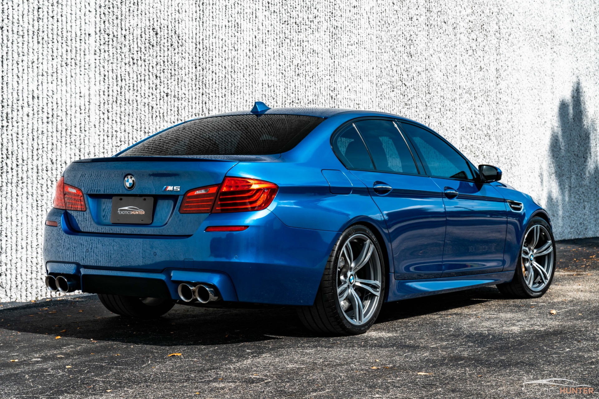

BMW M5 F10, 2011–2016 illəri arasında istehsal olunmuş dördüncü nəsil M5 modelidir. 4.4 litrlik twin-turbo V8 mühərriki ilə 560 at gücü istehsal edir. Güclü performansı, lüks salonu və rahat idarəetməsi ilə həm gündəlik sürüş, həm də yüksək sürətli performans üçün ideal balans yaradır.
← Geri dön<